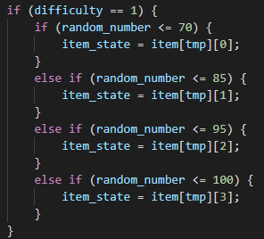

-
戰鬥過程
因為是回合制的遊戲，所以都是a玩家攻擊b玩家後判斷勝負，再讓b玩家攻擊a玩家...，直到一方的血量歸0。
-
基礎屬性
在戰鬥的互動上我們使用了5個基本屬性
- attack(攻擊力 : 普通攻擊傷害與技能傷害)
- defence(在傷害計算時減傷)
- health(血量)
- speed(玩家在當前回合移動的機率)
- luck(觸發幸運事件的機率與傷害)
-
傷害計算
在傷害計算上使用的是減法，當技能傷害低於對方防禦力的10%時只會造成10%的保底傷害，避免連續攻擊類型的角色不會因為單次傷害過低而太弱。
不過也有某些技能造成的傷害會穿透防禦力，不使用傷害公式計算。
-
角色屬性
每位角色都有自己帶有的許多屬性，其中包括基本屬性、基本屬性的上限、技能觸發機率與身上穿的裝備等等。
-
角色技能設計
每位角色(包括boss)都有根據其特色所設計的3個技能與普通攻擊(可能不會有變化)，角色的特性可能會影響每個技能的觸發機率，不過通常都會使用預設的技能觸發機率。
-
戰鬥回合
每個回合會發生的事情，包括
- 角色技能
- 裝備技能
- 幸運事件
在回合開始時會先觸發裝備技能與角色的一些被動與回合技能，然後判斷是否會發生幸運事件，以及當回合能不能移動。
-
角色技能
我們的技能類型總共有三種，當回合觸發技能、回合制技能與被動技能(每回合會觸發)。
-
當回合觸發技能

-
回合制技能
當round不為0的時候，就會觸發回合制的技能，而當round結束時，技能造成的改變就會復原。
-
被動技能
例如這位角色經過變身後(transform為1)，就會開始每回合觸發被動技能。
-
-
裝備技能
為了讓玩家穿裝備時更有感覺(不是只有數值上的變化)，我們為一些比較強的裝備附上了技能，如同角色技能一般，裝備技能也有三種類型，當回合觸發技能、回合制技能與被動技能。
-
幸運事件
如果你夠幸運(幸運值高)，你可能就會在回合中觸發幸運事件。
幸運事件並不只有造成傷害，也有一些buff與debuff，造成的傷害以攻擊力與幸運做依據(幸運的占比比較高，且無視對方的防禦力)，主要以有趣為目的設計。
-
戰鬥經驗值、金錢與掉落裝備
在經驗值與金錢的調整上，採用了比較合理的設計，低等的玩家打高等的玩家時會有額外的獎勵(不會比打贏同等玩家高)，相反的高等打低等的玩家時就會有逞罰(不鼓勵重複打低等玩家升等)。
在裝備掉落上，根據難度分層使難度越高越容易掉落稀有的裝備且經驗值獎勵也會越高，鼓勵玩家往較困難的等級挑戰，且固定的關卡掉落的裝備範圍也是固定的。

-
商店系統
商店是玩家與玩家進行交易的地方，實做起來相當複雜(沒比戰鬥系統複雜)，要提供上架、下架、購買等許多的功能，也要能讓玩家可以把裝備回收給系統換取金錢。
先把裝備的所有人改成商店，再將商品插入到玩家商店中。
-
下架
假設玩家不想販賣裝備了或是價錢這定錯誤，要提供下架的功能，這時可能會出現一件裝備同時被下架與購買的情況需要解決，此時就必須多做處理，確認table中商品是否還存在。
先確認商品是否還存在，再將裝備歸還給先前的擁有者，並刪除商店內的商品。
-
購買
購買會出現下架時會出現的同時購買的情況，必須要確認商品是否還存在。
先確認能不能購買，再將商品給買方，從商店刪除裝備，再更新買賣家雙方的金錢。
-
平衡性
我們使用隨機生成的10萬筆戰鬥資料來計算每位不同角色的勝率，可以提供玩家查詢勝率，與統計各角色之間戰鬥的勝率，同時也能讓我們更加方便的調整PVP的平衡。
-
遊戲展示
進入畫面
登入畫面
主畫面
主線畫面
主線的王與戰鬥
PvP畫面
系統商店
玩家商店
玩家背包裝備
角色介紹
裝備介紹
戰鬥紀錄
-
心得
在這次的專題中我負責的部分是後端的開發，在開發的過程中最早遇到的困難是node.js非同步執行的情況，當在一個函數中呼叫另一個函數時就會發生，如果有回傳值的話可能會接不到，導致參數在尚未被附值時就已經被取用了，而使用到空值，這造成的並不只會有錯誤發生，因為我們必須要與資料庫取資料的關係，同時還要考慮到是否是資料庫有問題、Query有問題或是連線有問題而造成的沒有資料。這個問題是我們完全沒遇到過的，因為過去撰寫的程式語言都不會發生這樣的情況，從一開始覺得很崩潰、不習慣(常常漏寫而導致debug很久)，到後來發現其實也還好，因為這件事在node.js的es7的環境下已經被簡化很多了，若是在過去的版本，處理上會更加麻煩。
最開始建立資料庫的架構時，其實很害怕資料庫的架構不良好，導致越學越多時可能需要大幅度的更改。在期中前期做資料庫的建表與設計時，其實就有碰到一些問題，例如有某部分的功能沒有考慮到而少建了一些資料表或屬性，或是不熟悉語法導致沒有使用auto_increment或是沒有primary key，我們的資料表在前期也改過了蠻多次的，不過在期中過後就比較穩定了，大概只有在要新增功能時去新增屬性或資料表，而隨著越學越多後才發現其實目前的資料庫架構蠻不錯的，把每個表table所代表的意思都切的很準確，運氣也是很好。
戰鬥系統設計大概是花最多時間設計的，在剛開始做角色互動時使用的是java，有了起點後再實際的放在node.js上執行。在學習的過程中體驗到了class的多形以及繼承，簡化了在撰寫時的很多步驟，在修改時也能很簡單的找到要修改的目標在哪裡。除了寫互動，如何設計戰鬥內容，並且以程式去實作也是很重要的事情。我們讓角色在戰鬥互動時有5個基本的屬性，某些角色可能會自帶一些屬性(讓技能能有更多變化)，為了讓這些屬性的互動可以更有趣且更多樣化，也設計了每回合可能會觸發的幸運事件、裝備技能與角色的三種技能，由於技能種類繁多，所以被分成了三個大類(後方的介紹會提到)，這樣就會有格式化的設計方式。
因為我們的主題比較特殊一些，所使用到的並不只是有資料庫的操作，考慮到使用者不能忍受太久的delay，且我們每張表的資料其實也都不少，所以在撰寫Query時完全沒有使用到cross product，而是將對資料庫的操作切開來做，這樣的做法增加了整體寫起來的困難程度，且會出現非同步執行帶來錯誤的問題，不過帶來的效益也很高，在使用應用程式時的延遲很低(約5ms~10ms)，資料能很快速的在前端上顯示，肉眼幾乎無法察覺有明顯的卡頓(網路問題除外)。
最開始實作功能時，我都先假設前端傳送過來的資訊是正確的，例如不會有人跟一個不存在的玩家戰鬥等，但在實作商店時就不一樣了，可能會有多個玩家想購買同一件商品，而因為前端不會頻繁更新頁面的原因，於是有可能發生玩家購買了一個不存在的裝備，或是想下架一件不存在的裝備等問題，也使得必須做一些額外的資訊去提醒他們裝備已經不存在了，這是最開始時沒有碰到的問題。
這應該算是第一次與其他人合作開發，並且要維護一個這麼大的專案(組合語言的專題都沒這麼龐大)，在過程中體驗到了很多新鮮的事物，要整合所有人的意見並不容易，在最開始要決定遊戲內容時也是經過了大家很多的思考與討論，包括裝備是否該有技能以及傷害是否應該隨機等等，過程中也有意見不合與想法的改變，不過大家統一的想法大概就是把這個專題做的更完整一些，讓玩家與製作者都能開心。畢竟大家離畢業也不遠了，能開發一個好玩的遊戲也是我們剛進入資工系的初衷，能將自己喜歡的事物放進去給他人欣賞，不論這個目標是否有達到，我都對這個結果很滿意了。
我們的文字冒險